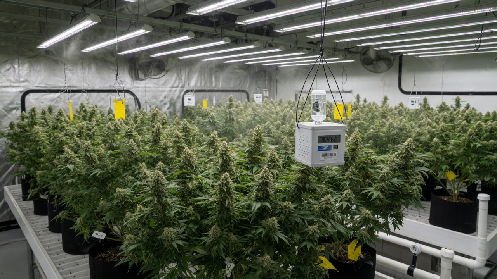
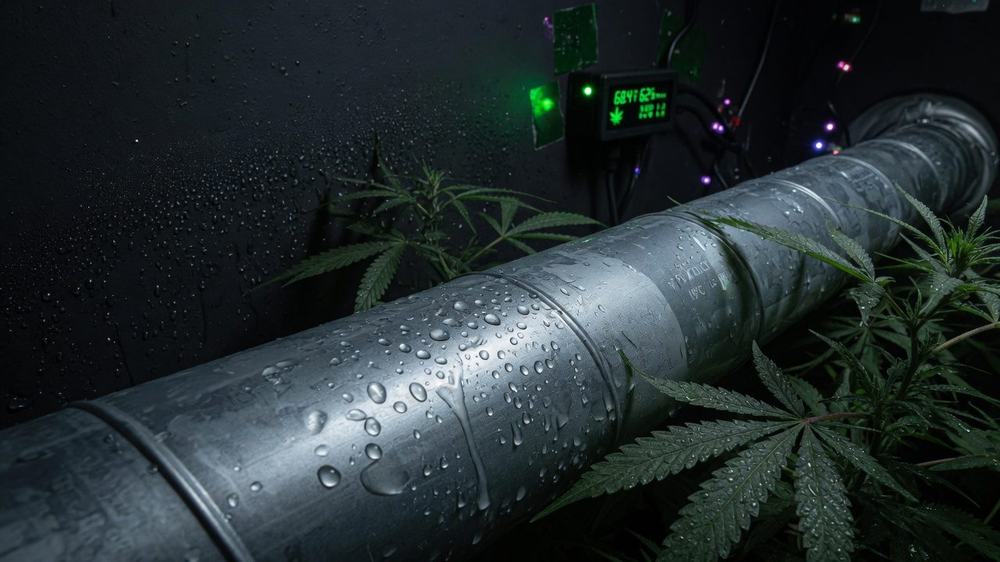
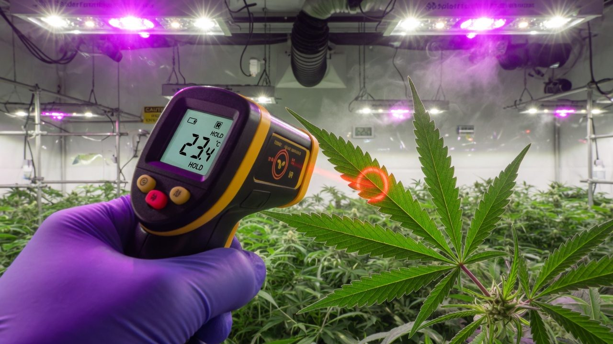
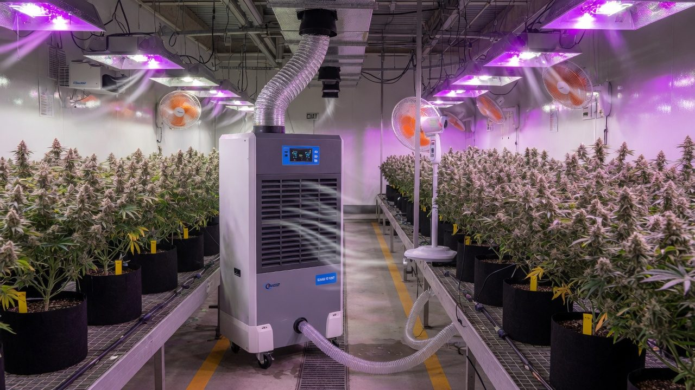

Temperature, humidity and VPD: stage targets, measurement and condensation control
Vapor pressure deficit (VPD) is the value that shows how much water the air removes from the leaves. This paper gives the definition of VPD and shows how to calculate it. It shows that the leaf temperature gives the correct deficit. It gives the targets for each stage and the sources of the targets. It also gives the control of the dew point at night, which prevents mold. It shows how to put the sensors in the correct position and how to read them accurately.
Purpose and scope
Two rooms show a relative humidity (RH) of 55%. One room is at 20 °C (68 °F), and the plants are in good condition. The other room is at 28 °C (82 °F). In this room, the growth of the same cultivar stops, the leaf edges bend up, and the plants use a large quantity of water.
The number on the controller is the same, but the two rooms are very different. RH is a percentage of a value that changes with the temperature. A percentage has no effect on the plant. The force with which the air pulls water out of the leaves has an effect on the plant.
This force has a name: vapor pressure deficit (VPD). VPD is the value that the temperature and the humidity make together. Air can contain water vapor up to a maximum, and this maximum changes with the temperature of the air. VPD is the difference between this maximum and the vapor pressure of the water that is in the air[1].
Each leaf transpires into this difference. When the difference is small, the force is weak. When the difference is large, the force is strong, until the plant closes its pores to keep the water in the plant[2].
This paper gives only the necessary information about the physics of moist air. It gives the definition of VPD and a formula that you can use in a calculator. It shows that the leaf temperature is the correct value for the formula. It also shows how the type of light fixture changes the leaf temperature. It gives the VPD bands for each stage. A band is the range of VPD values for one stage.
It also gives the sources of the bands, the targets for the day and the night, and the control of the dew point. This control prevents bud rot. It shows how to measure all these values and prevent incorrect sensor readings. It is not necessary to know physics before you read this paper. The paper gives the definition of each term.

Definitions
Evidence and limitations
We want each paper to be correct. Thus we examine each paper for information that is not solid. This information comes from the view of one grower, from a small number of sources, or from grower methods that have no controlled test. We identify this information, and we do not show it as solid.
Frequently there is no paper for the decision that you must make. Then we use the reports of other growers and the methods that work in the rooms that we know. This information can help you, but it is not the result of a laboratory test. Use the methods that work for your plants, for your room and for your meters. If a table does not agree with your crop, use the data from your crop and record the difference.
- The primary definitions and the units of measurement in the paper
- Safety limits that have a citation to a regulation or a specification
- Target ranges for light, climate and feed in each stage. They are start values that you can change.
- SOPs that work in many rooms, but you must adjust them for your genetics and meters
- A number for yield or potency that you will always get, with no test at many sites
- Controller setpoints from a different facility, with no new calibration
If you find an error, make a report. We will correct it. Make the report on GitHub, with the name of the paper and the information that is incorrect. If you have a source, include it: Make a report of an accuracy problem. The regulations, labels and licenses of your area always override each procedure in these papers. The label weak in a paper shows the points where the risk of an error is highest.
Basic information about VPD
The quantity of vapor that air can contain changes with the temperature. When the temperature of the air increases, the air can contain more vapor. The quantity of water that is in the air does not change because the temperature of the room increases. Only the difference between the saturation vapor pressure (es) and the actual vapor pressure (ea) changes. This difference is VPD.
VPD has an effect on plants, but RH does not. Water moves out of a leaf by diffusion. The difference in vapor pressure between the saturated air in the leaf and the air of the room around the leaf causes the diffusion. The ratio of the two vapor pressures does not cause the diffusion[2]. The air of two rooms with the same RH can remove water from the crop at very different rates. The air of two rooms with the same VPD removes water at the same rate, for all values of RH.
The curve is the most important physics for the control of the climate. It gives the cause of three problems with humidity in a grow room. First, the RH in the room increases quickly to 90% at lights-off. The cause is that the saturation vapor pressure decreases and the quantity of water stays the same. Second, a heater makes the air drier, but the heater does not remove a gram of water. Third, in summer the plants use much more water at the same RH.
RH is a percentage of a maximum that changes. VPD is the difference. The difference has an effect on the plant.
How to calculate VPD
All the values in this paper use one formula for the saturation vapor pressure. The formula is the result of measurements, and it is accurate to a fraction of one percent at the temperatures of a grow room. It is the Tetens formula of FAO Irrigation and Drainage Paper 56[1]. T is the temperature in °C, and the result is in kPa:
es(T) = 0.6108 × e(17.27 × T) / (T + 237.3) kPa
Then: ea = es(Tair) × RH / 100 and VPDair = es(Tair) − ea = es(Tair) × (1 − RH/100)
This example shows how to calculate the air VPD in steps. The air VPD is the VPD that you calculate with the air temperature. The numbers are the same as in all of this paper:
You can use a table and not the formula. The table gives the values of es for the temperatures of most rooms. Multiply the value of es by (1 − RH/100). The result is the VPD:
| Air temperature | es (kPa) | VPD at 50% RH | VPD at 60% RH | VPD at 70% RH |
|---|---|---|---|---|
| 18 °C (64 °F) | 2.06 | 1.03 | 0.83 | 0.62 |
| 20 °C (68 °F) | 2.34 | 1.17 | 0.94 | 0.70 |
| 22 °C (72 °F) | 2.64 | 1.32 | 1.06 | 0.79 |
| 24 °C (75 °F) | 2.98 | 1.49 | 1.19 | 0.90 |
| 26 °C (79 °F) | 3.36 | 1.68 | 1.34 | 1.01 |
| 28 °C (82 °F) | 3.78 | 1.89 | 1.51 | 1.13 |
| 30 °C (86 °F) | 4.25 | 2.12 | 1.70 | 1.27 |
1 kPa = 10 mbar = 10 hPa. Some charts from the US use other units, for example psi or grains of moisture. Do not use these units. The cultivation literature and all good controllers use kPa. The values that you will see in a grow room are in the range of approximately 0.2 (air with a very high humidity) to 2.5 (air with a very low humidity).
Leaf temperature and leaf VPD
This correction is important if you want to control VPD and not only record it. The air in a leaf is at saturation at the temperature of the leaf. Thus the gradient that causes transpiration is not es(air) − ea. It is es(leaf) − ea[2]. When the leaf and the air are at the same temperature, the two values are the same. But the two temperatures are not always the same.
The temperature of a canopy in good condition that transpires is near the air temperature. The difference is usually a maximum of approximately 2 °C for all light sources. But the leaf temperature can be higher or lower than the air temperature, and the radiation on the canopy is the primary cause[3]. The difference between the leaf temperature and the air temperature is the leaf offset.
An HPS lamp gives a large quantity of radiation to the canopy, and the temperature of the leaves becomes higher than the air temperature. An LED fixture removes most of its heat at the heat sink. A leaf that transpires removes heat by evaporation, and the temperature of this leaf is frequently lower than the air temperature. At equal light intensity, a model gives a difference of approximately 1.3 °C between the two types of light[3]. In the tools that growers use, the usual value for the temperature of an LED canopy is 1–3 °C less than the air temperature[6].
Do the example again with the measured temperatures of the leaf. The result changes. Air at 25 °C (77 °F) and 60% RH gives 1.27 kPa. This VPD is usual for flowering.
If the LED canopy is at 23 °C (73 °F), the leaf VPD is es(23) − 1.90 = 0.91 kPa. This VPD is for the vegetative stage, and the climate is a third wetter than the dashboard shows. If the leaf in an HPS room is at 26 °C (79 °F), the leaf VPD is 1.46 kPa. This VPD is at the top of the band for flowering. The room is the same, but there are three different results.
Most rooms that change from HPS to LED fixtures keep the targets for temperature and humidity of the HPS lamps. The air VPD looks correct, but the leaf VPD is one band lower. As a result, the crop is wetter. The growth is softer, the drybacks are slower, and the room is nearer to condensation at night.
If the mold pressure increased after you changed the fixtures, it is possible that the leaf offset is the cause. Increase the air temperature by one or two degrees, or decrease the RH. Then compare the values with the leaf VPD.
If your IR thermometer shows that a leaf is hot, examine the root zone before you change the climate. The offsets above are for a canopy that transpires and has sufficient water. A leaf with drought stress closes its stomata. As a result, evaporation does not decrease the temperature of the leaf. The temperature of this leaf can be 6–12 °C higher than the air temperature[3]. The hot leaf shows that the plant does not transpire, and a correction of the chart does not help.
Use of a VPD chart
The usual chart for growers shows the results of the formula. The temperature is on the side, the RH is at the top, and each cell shows the VPD. The colors show the stage bands of the next section:
- 1Measure where the plants areMeasure the air temperature and the RH at the height of the canopy, in the middle of the room. Do not measure at the controller on the wall. The position of the sensor is as important as the instrument (section 11).
- 2Measure the leaf temperatureUse an IR thermometer or a canopy sensor on a leaf at the top of the canopy that receives light. If you cannot measure the leaf temperature, use these values. In an HPS room, the leaf temperature is approximately the same as the air temperature. In an LED room, the leaf temperature is 1–2 °C less than the air temperature[3].
- 3Read the cellFind the row for your temperature and the column for your RH. The value in the cell, in kPa, shows how much water the air can remove from the crop.
- 4Correct the value for the leafWhen the leaf is colder than the air, the correct VPD is lower than the value in the cell. When the leaf is hotter than the air, the correct VPD is higher. At 25 °C (77 °F) and 60%, a canopy that is 2 °C colder than the air changes 1.27 kPa to 0.91 kPa. Do not make an estimate of the correction. Use a calculator for the leaf offset or a controller that uses the leaf temperature[6].
- 5Move along one axis of the chart each timeIf the air is too dry, increase the RH (move left in the chart) before you increase the temperature (move up in the chart). Make one change. After fifteen minutes, read the values again.
27 °C (81 °F) with 65% RH and 21 °C (70 °F) with 45% RH give a VPD of approximately 1.3 kPa. But the two climates are not the same, because the temperature has effects on the plant that are different from the effects of VPD.
The photosynthesis of cannabis has a maximum at approximately 25–30 °C (77–86 °F)[7]. The morphology and the stretch change with the difference between the day temperature and the night temperature[10]. The disease pressure changes with the absolute humidity. First select the temperature that is necessary for your stage and your fixture. Then use the humidity to adjust the VPD at this temperature.
VPD targets for each stage
The bands below are the usual method that growers use. Physics does not give these bands. The bands are the result of the methods of growers, which became almost the same in a period of ten years[6]. The bands are in the ranges that the literature on cannabis production recommends[5].
The only controlled test of the humidity for cannabis that we have shows the wet limit of the bands. In this test, the VPD for flowering was 0.05–0.25 kPa and not approximately 0.9–1.3 kPa. The flower biomass decreased by 71%, flowering started three weeks after the usual time, and the cannabinoid concentration decreased by a large quantity[4].
Start in the middle of the band. Then use your cultivar, the light intensity and your mold limit to select the value in the band.
| Stage | Leaf VPD band | Because | Example of temperature and RH (air VPD) |
|---|---|---|---|
| Clones and new seedlings | 0.4–0.8 kPa | There are no roots or only a small number of roots. The shoot must not transpire more than the uptake of water. | 24 °C (75 °F) and 75–80% RH give approximately 0.6–0.7 kPa |
| First part of the vegetative stage | 0.8–1.1 kPa | The plant has roots. Increase the gas exchange, but do not cause stress to the plant. | 25 °C (77 °F) and 65–70% RH give approximately 1.0 kPa |
| Last part of the vegetative stage | 0.9–1.2 kPa | The canopy is full and the light intensity is high. Keep the flux of water high and stable. | 26 °C (79 °F) and 62–68% RH give approximately 1.1–1.3 kPa |
| First and middle part of flowering | 1.1–1.4 kPa | Make the flow of water and nutrients high during the peak of bulking. | 26 °C (79 °F) and 58–62% RH give approximately 1.3–1.4 kPa |
| Last part of flowering | 1.2–1.5 kPa | The buds have a high density. At this time, the mold limit is more important than the VPD target. | 24 °C (75 °F) and 50–55% RH give approximately 1.4–1.5 kPa |
No dose–response curve of cannabis yield against VPD is available for all stages. The bands are estimates from the physiology of the plant, from the literature on production, and from the methods in many rooms.
The data show three results clearly. A climate that is much too wet decreases the yield by a large quantity[4]. A climate that is much too dry closes the stomata and decreases photosynthesis[2]. A stable VPD is more important than a VPD at the best value. Plants at a stable VPD in the middle of the range become larger. Plants at a VPD that increases and decreases around the best value are smaller[8].
The effect of VPD on transpiration
Transpiration moves water from the root zone to the air. Water evaporates from the walls of the cells in the leaf. The water vapor leaves the leaf through the stomata, by diffusion, into the drier air of the room. The water that leaves the leaf causes tension in the water column in the plant. The tension pulls water, and all the materials that the water contains, up from the roots. VPD is the size of this deficit.
A larger difference pulls with more force. Calcium moves only with this flow of water. Thus, when the VPD is low for a long time, weak tissue and tipburn occur after some time in fast growth. Evaporation also removes heat. As a result, the temperature of a canopy in good condition that transpires is lower than the temperature of the air around the canopy[3].
The effect of VPD on the plant does not increase at a constant rate. This fact is important. When VPD increases to a value more than the range without stress for the plant, the guard cells close the stomata more and more. This prevents damage to the water column in the plant.
Transpiration does not increase, and it can decrease. The intake of CO2 decreases, and photosynthesis decreases with it. These changes occur when the light intensity makes more gas exchange necessary[2]. A very high VPD does not increase growth. It decreases photosynthesis.
- Too low (less than 0.4 kPa): the pores are open, but there is no gradient. The growth becomes soft, with a large stretch. The supply of calcium decreases. Films of water stay on the tissue. Guttation occurs at night. A test shows that the effect on flowering is very large[4].
- In the band: the air removes water at a stable rate, the leaf is cool, the stomata are open, and the nutrients move. The other sections of this paper help you to keep this condition.
- Too high (more than 2.0 kPa): the stomata close, the leaf becomes hotter, and photosynthesis decreases. In the afternoon, the plant keeps the water in its leaves and does not increase in size[2].
Tests in controlled environments show the same result each time. When the variation of the VPD is small, the stomata stay open. Photosynthesis is then higher than with a VPD that changes up and down around the best setpoint[8]. A room at a VPD of 1.1 for the full day is better than a room with an average VPD of 1.2. The VPD in the second room changes in the range of 0.8 to 1.6.
Climate targets for the day and for the night
During the day, VPD control is for growth. Keep the VPD in the stage band, and keep it stable. At night, VPD control is for protection. Most rooms have problems at night, because all the values in the formula change at the same time at lights-off. The heat load becomes zero, the air temperature decreases, and the saturation vapor pressure decreases with it. The RH increases quickly, although no water goes into the room.
- 1A ramp at the start of the dayThe plant starts to operate before the transpiration starts. Let the VPD increase from the minimum at night to the day band in the first 1–2 hours of light. Do not start the dehumidifier and the heater at full power at one time. A slow change is better than a fast change[8].
- 2Keep the VPD in the band at the peakIn the middle of the photoperiod, the transpiration and the drift of the sensors are at their peak. At this time, use the values of the canopy sensor and not the values of the controller on the wall.
- 3Dehumidify before lights-offStart the dehumidification before the temperature decreases. It is easier to remove water from warm air. Thus the RH is less than the risk limit when the night starts. You do not have to decrease the RH after the night starts.
- 4Keep a minimum VPD at nightThe usual method is as follows. Do not let the VPD at night decrease to much less than approximately 0.7–1.0 kPa. Do not let the canopy RH stay at more than 70%. Plants continue to transpire at night, usually at 5–15% of the rates in the day[9]. Thus the quantity of water in the air continues to increase when the lights are off.
The difference between the day temperature and the night temperature (‘DIF’) controls the stretch of the internodes in greenhouse crops. When the day temperature is higher than the night temperature, the plants stretch. When the night temperature is equal to or higher than the day temperature, the internodes are short[10]. Decrease the temperature at night by only 2–4 °C. Then the morphology is easy to control, and the RH increases by a smaller quantity at night. If the night temperature is much lower than the day temperature, the internodes are short, but there is a problem of condensation.

Dew point and the risk of condensation at night
RH shows the quantity of water in the air, compared with the maximum. Dew point shows the temperature at which this water becomes liquid water. At the dew point, the actual vapor pressure is equal to the saturation vapor pressure[1].
Liquid water collects on a surface that is at a temperature equal to or less than the dew point. Examples are an external wall, bare steel, port glass and the surface of a large cola that sends heat by radiation to a cold ceiling. Liquid water and spores together cause bud rot. The risk of botrytis increases quickly when the humidity at the canopy is more than approximately 70%[11].
The dew point changes only when the quantity of water in the air changes. When you dehumidify the air, the dew point decreases. When you irrigate or when the plants transpire, the dew point increases. When the room temperature decreases, the dew point does not change. The difference between the room temperature and the dew point decreases.
You can calculate the dew point from the vapor pressure: Td = 237.3 × ln(ea/0.6108) ÷ (17.27 − ln(ea/0.6108))[1]. You can also read the dew point from a table:
| Night air at 24 °C (75 °F) | 50% RH | 55% RH | 60% RH | 65% RH | 70% RH |
|---|---|---|---|---|---|
| Dew point | 12.9 °C (55.2 °F) | 14.4 °C (57.9 °F) | 15.8 °C (60.4 °F) | 17.0 °C (62.6 °F) | 18.2 °C (64.8 °F) |
| Surfaces with condensation | Almost no surface in the room | Cold external corners | Walls with no insulation, steel | Most surfaces that have no heat source | All cool surfaces and the buds |
A canopy with a high density has transpiration and air that does not move. As a result, the humidity in the canopy is 15–25% higher than the reading of the room sensor[12]. A room with a record of 60% at night can have a microclimate of 80% or more in the colas. The rot starts in this microclimate. Defoliation and airflow through the canopy are tools to control the humidity. Read the airflow paper and the mold paper.

Position of the sensors at the height of the canopy
The climate control has all the errors of its sensors. Three conditions give a correct VPD value. The sensor is in the correct position. Radiation does not heat the sensor. You have a measurement of the leaf temperature.
- Position. Put the sensor at the height of the canopy, in the area of the crop. Keep the sensor away from doors, the air from the dehumidifier and the outlets of ducts. The average of the room is not correct for the crop. The crop is in a microclimate that the sensor on the wall cannot measure[12].
- Shield and air flow. A sensor in the light of a fixture absorbs radiation, and it shows a temperature that is higher than the air temperature. When the air does not move and the light is strong, the radiation error is some degrees and not a fraction of a degree[13]. A sensor with no shield below a fixture shows a high temperature. As a result, the controller calculates a VPD that is too high and humidifies a room that has sufficient humidity. Put a shield on the sensor and, if possible, a small fan to move air across it (an ‘aspirated’ sensor).
- Leaf temperature. An IR thermometer is the best tool to add for the measurement of VPD, for a cost of less than NZ$50. Point it at a leaf that receives light, at the canopy top, and not at benches, pots or your hand. Keep it near the leaf and at a right angle to the leaf. Measure some leaves and calculate the average. IR canopy sensors for this task measure all the time and send the leaf VPD to the controller.
- More than one sensor. Two sensors that agree give better data than one sensor with a value that you cannot compare. Record the values at night as carefully as the values in the day. Section 10 is about the conditions at 3 a.m.
Put all your RH sensors together in a sealed container for one night. Put a saturated mixture of table salt and water in the container. The air above the mixture becomes stable at approximately 75% RH. Compare the value of each sensor with this RH. If the difference is more than a small number of points, correct the offset or remove the sensor. Do this each quarter, because RH sensors that use capacitance have drift.

Equipment to humidify and to dehumidify
Almost all the irrigation water goes into the air of the room, because the plants transpire the water as vapor. This latent load, and not the lights, is the load that the dehumidification must remove[14]. Select the size of the dehumidification equipment for this load. A room that receives 100 L/day of irrigation water must have equipment that can remove most of the 100 L/day as vapor. The dehumidification has the most work in the hours immediately after lights-off. A dehumidification system that is too small is the most frequent cause of high humidity at night when growers do not know the cause.
- Dehumidifier: the primary equipment. Select a size that is sufficient for the volume of irrigation water each day, with headroom. Connect the condensate to a drain through a pipe. Point the air from the dehumidifier away from the sensors[14].
- Air conditioning: an air conditioner also dehumidifies the air, but dehumidification is not its primary task. The condensate on its coil is water that leaves the room. This function is satisfactory until the air conditioner starts and stops in short cycles at night. Then it does not dehumidify when the RH increases quickly.
- Humidifier: a tool for clones and for the first part of vegetative growth in most sealed rooms. Use clean water. Keep the plume away from the leaves and the sensors. A large canopy humidifies the room air.
- Heater: a heater increases the saturation vapor pressure. As a result, the RH decreases and the VPD increases, with no movement of water. A heater is frequently the method with the lowest cost for a small room that has a high humidity for a long time.
- Circulation fans: these fans do not change the VPD of the room. But the fans remove the saturated boundary layer of air that does not move around the leaves, and the microclimate of the canopy[12]. The boundary layer and the microclimate cause the difference between the VPD that you set and the VPD that the leaf has.
A frequent error is an overlap of the humidity setpoints of the humidifier and the dehumidifier. As a result, the humidifier causes the dehumidifier to operate, and the dehumidifier causes the humidifier to operate. The two items of equipment use power, and the humidity of the room does not change. Give the humidifier and the dehumidifier a dead band. A dead band is a minimum difference of 5% RH between the setpoint of the humidifier and the setpoint of the dehumidifier. Change only one control each time:
Frequent errors in VPD control
The chart shows that a higher temperature gives a higher VPD. Thus a grower sets the room to 30 °C (86 °F) to get a VPD of 1.4 kPa. Then the temperature is more than the best temperature for the photosynthesis of the plants[7]. The biology of the root zone and of the disease changes, and the plants use too much water.
The VPD is in the range, but the other conditions are not correct. Set the temperature for the stage. Then control the VPD with the humidity.
The air VPD in an LED room is 1.3, and this value looks correct. But the cool canopy has a VPD of 0.9[3]. After some weeks, the growth is soft and the mold pressure increases. Then the grower thinks that the ‘perfect climate’ is the cause. Measure the temperature of a leaf. Correct the chart.
The curves for the day are correct, but there is no procedure for the night. At lights-off, the saturation vapor pressure decreases and the RH stays at 80% or more. Dew collects on the coldest surfaces, and the conditions are correct for botrytis[11]. The dehumidifier must operate with the largest capacity at night.
One sensor with no shield above the canopy measures the effect of the light, the air from the door and the air from the dehumidifier. It does not measure the crop[13]. The controller then makes the error automatic. Put a shield on the sensor, and move air across the sensor with a small fan. Put the sensor at the height of the canopy. Compare it with a second sensor.
A grower can use the heater, the humidifier and the dehumidifier frequently to hold a VPD of 1.25 accurately. This method gives plants in a worse condition than a stable VPD of 1.1. Frequent changes of the VPD have a bad effect on the stomata[8]. Use the middle of the band as the target. Make a stable VPD the primary target. Make one adjustment for each photoperiod, and not one adjustment for each hour.
The plants show wilt, and as a result the grower increases the RH. But wilt is frequently a problem of water supply (a dry root zone or a root zone with too much water), and not a problem of demand. Then the root zone continues to have the problem, and the canopy is wet. Examine the moisture of the substrate before you change the air. A hot leaf on the IR thermometer shows that the plant does not transpire[3].
Troubleshooting
| Symptom | Possible cause in the climate | Correction |
|---|---|---|
| The edges of the leaves bend up and become dry, and the growth stops in the middle of the day | VPD is too high (the temperature is high for short periods, and the RH decreases) | Increase the RH first. Measure the leaf temperature to make sure that the VPD is correct. If the leaves are hot, examine the irrigation before you change the climate[2] |
| Soft growth with a large stretch, ‘praying’ leaves that are flat, and tipburn in fast vegetative growth | A low VPD for a long time, with weak transpiration and a weak flux of calcium | Decrease the RH or increase the temperature by one degree. Make sure that the canopy sensor does not measure a wet microclimate[4] |
| The RH increases quickly to 85% or more in one hour or less after lights-off | A latent load and no dehumidification at night | Start the dehumidifier before lights-off. Compare the capacity that the dehumidifier has in the room with the liters of irrigation water each day[14] |
| Condensation on walls, port glass or the skin of the tent at night | Surface temperatures that are less than the dew point | Decrease the RH at night (dehumidifier) or decrease the drop of temperature at night. Put insulation on the cold surface[1] |
| Botrytis in the largest colas although the room sensor shows 60% | The microclimate of the canopy is 15–25% wetter than the value of the room sensor | Make sure that air flows through the canopy. Defoliate the canopy. Use the RH at the canopy at night, and not the RH at the wall[12][11] |
| Two sensors show values with a difference of 5% RH or more, or a difference of 1 °C or more | An error of position or of radiation, or drift | Put a shield on the sensor and move air across it. Move the sensor away from strong light and from strong air flow. Do the salt test each quarter[13] |
| The VPD is correct on paper, but the plants show wilt | A problem on the supply side (roots, substrate, EC), or the leaf temperature that you use is incorrect | Measure the canopy with an IR thermometer. Weigh the substrate or measure it with a probe. Calculate the VPD again with the leaf temperature[3] |
Important facts about VPD control
- The difference has an effect on the plant. The percentage does not. VPD = saturation vapor pressure minus actual vapor pressure, in kPa. The same RH at two different temperatures gives two different climates[1].
- The saturation vapor pressure increases by a constant percentage. The value increases by approximately 6% for each degree, and the value becomes two times larger when the temperature increases by approximately 11 °C. A decision about the temperature is always also a decision about the humidity. Thus lights-off is the most dangerous hour of the day.
- The leaf temperature gives the correct value. LED canopies are colder and wetter than the chart shows. HPS canopies are hotter and drier. A leaf with stress is much hotter. The temperature of this leaf shows a problem and is not an offset[3].
- VPD in the day causes growth, and RH at night keeps the crop in good condition. Keep the stage band stable through the photoperiod[8]. Keep the canopy RH less than approximately 70%. Keep all surfaces at a temperature higher than the dew point at night[11].
- Measure where the plant is. Put the sensor at the height of the canopy, with a shield and a flow of air. Compare it with a second sensor. Use a correct leaf temperature. If you do not do this, the controller makes an incorrect value automatic[13][12].
VPD is the demand side of the supply and demand of water. The systems paper gives information about the equipment for VPD. The airflow paper shows how to move the air with the setpoint conditions into the canopy. The mold risk paper is about the problem that this control prevents.
References
- Allen RG, Pereira LS, Raes D, Smith M (1998). Crop evapotranspiration - guidelines for computing crop water requirements. FAO Irrigation and Drainage Paper 56, Chapter 3: meteorological data (Tetens saturation vapour pressure equation, vapour pressure deficit and dew point relations). Rome: FAO. (source not from a journal, for example from a manufacturer) https://www.fao.org/4/x0490e/x0490e07.htm
- Grossiord C, Buckley TN, Cernusak LA, et al. (2020). Plant responses to rising vapor pressure deficit. New Phytologist 226(6):1550-1566. https://doi.org/10.1111/nph.16485
- Nelson JA, Bugbee B (2015). Analysis of environmental effects on leaf temperature under sunlight, high pressure sodium and light emitting diodes. PLoS ONE 10(10):e0138930 (well-watered leaves typically within ~2 °C of air; LED canopies ~1.3 °C cooler than HPS at equal photon flux; water-stressed leaves modelled 6-12 °C above air). https://doi.org/10.1371/journal.pone.0138930
- Corredor-Perilla IC, et al. (2025). Elevated relative humidity significantly decreases cannabinoid concentrations while delaying flowering development in Cannabis sativa L. Front. Plant Sci. 16:1678142 (flowering at 0.05-0.25 kPa VPD vs 0.92-1.29 kPa: -71% flower biomass, three-week flowering delay, multi-fold cannabinoid reductions). https://doi.org/10.3389/fpls.2025.1678142
- Jin D, Jin S, Chen J (2019). Cannabis indoor growing conditions, management practices, and post-harvest treatment: a review. Am. J. Plant Sci. 10(6):925-946 (recommends ~75% RH for juvenile plants and 55-60% RH through vegetative growth and flowering at 25 °C). https://doi.org/10.4236/ajps.2019.106067
- Pulse Labs. The ultimate vapor pressure deficit (VPD) guide: leaf-basis VPD formula, leaf-offset calculator (leaves typically 1-3 °C below air) and stage bands (~0.8 kPa clones/seedlings, ~1.0 kPa veg, 1.2-1.5 kPa flower). Industry convention reference, not peer-reviewed. (source not from a journal, for example from a manufacturer) https://pulsegrow.com/blogs/learn/vpd
- Chandra S, Lata H, Khan IA, ElSohly MA (2008). Photosynthetic response of Cannabis sativa L. to variations in photosynthetic photon flux densities, temperature and CO2 conditions. Physiol. Mol. Biol. Plants 14(4):299-306. https://pmc.ncbi.nlm.nih.gov/articles/PMC3550641/
- Inoue T, et al. (2021). Minimizing VPD fluctuations maintains higher stomatal conductance and photosynthesis, improving plant growth in lettuce. Front. Plant Sci. 12:646144. https://pmc.ncbi.nlm.nih.gov/articles/PMC8049605/
- Caird MA, Richards JH, Donovan LA (2007). Nighttime stomatal conductance and transpiration in C3 and C4 plants. Plant Physiol. 143(1):4-10 (night transpiration commonly 5-15% of daytime rates, at times up to ~30%). https://doi.org/10.1104/pp.106.092940
- Myster J, Moe R (1995). Effect of diurnal temperature alternations on plant morphology in some greenhouse crops, a mini review. Scientia Horticulturae 62(4):205-215. https://doi.org/10.1016/0304-4238(95)00783-P
- Punja ZK, et al. (2025). The epidemiology and management of Botrytis cinerea causing bud rot on greenhouse-cultivated cannabis. Can. J. Plant Pathol. https://doi.org/10.1080/07060661.2025.2478250
- Zhang D, et al. (2020). Substantial differences occur between canopy and ambient climate: quantification of interactions in a greenhouse-canopy system. PLoS ONE 15(5):e0233210 (in-canopy RH ~15-25% higher than surrounding air). https://doi.org/10.1371/journal.pone.0233210
- Tarara JM, Hoheisel G-A (2007). Low-cost shielding to minimize radiation errors of temperature sensors in the field. HortScience 42(6):1372-1379 (radiation loading drives whole-degree errors in unaspirated air-temperature measurement; shielding and aspiration recover accuracy). https://doi.org/10.21273/HORTSCI.42.6.1372
- HPAC Engineering. Latent loads matter: HVAC for cannabis grow facilities (transpiration returns most irrigation water to room air as vapour, the dominant dehumidification load; filters do not remove it). (source not from a journal, for example from a manufacturer) https://www.hpac.com/industrial/article/21270796/latent-loads-matter-hvac-for-cannabis-grow-facilities
Each citation in the paper, for example [1], refers to an item in this list. Each item is a primary source or an instruction from an authority, unless the item shows a different type. The results of cannabis tissue culture change much with the genotype. Before you use the dilutions, hormone doses and local regulations, make sure that they agree with the primary sources.